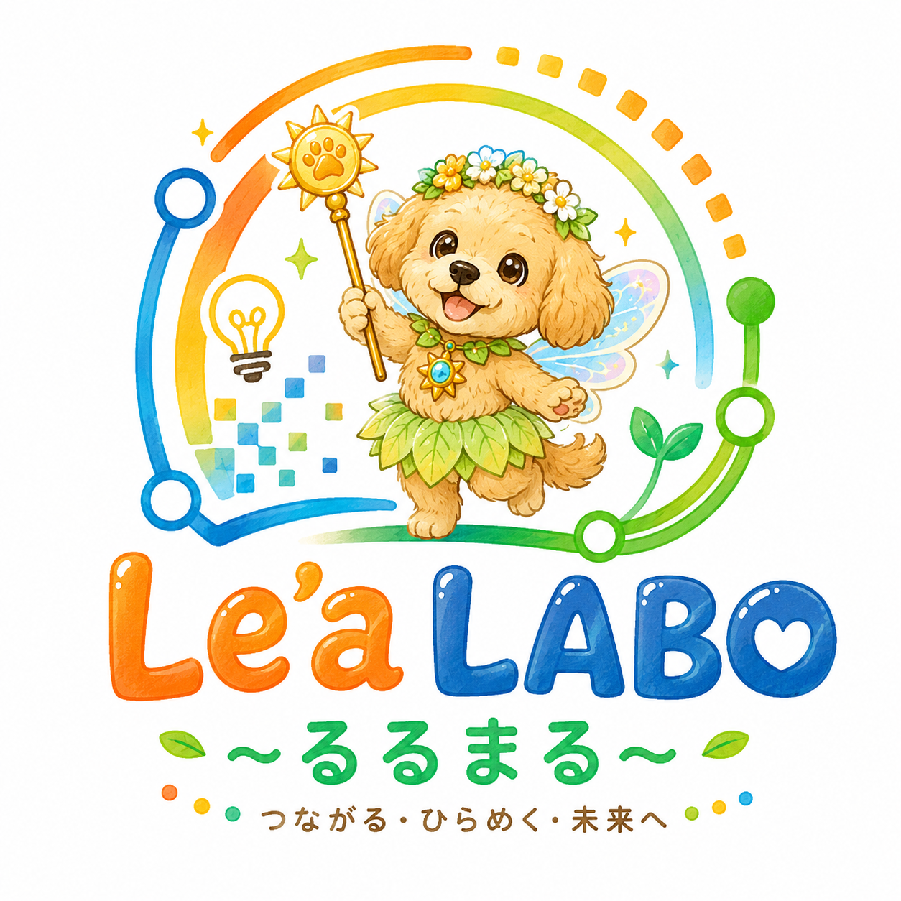
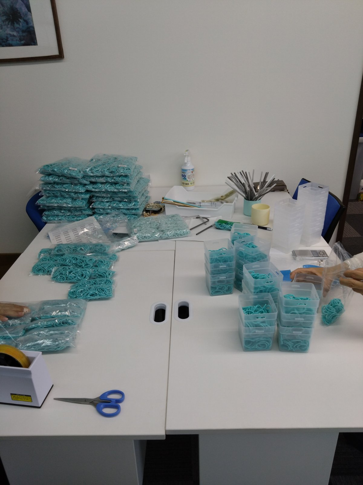

自分のペースで、
「できた」を積み重ねる。
「できた」を積み重ねる。
就労継続支援B型 Le'aLABO ～るるまる～は、雇用契約を結ばずに、軽作業や事務・パソコン作業などを通じて働く経験を積める場所です。体調やペースに合わせて、無理なく通えます。

作業内容
得意なこと、やってみたいことから、無理なく始められます。

1日の流れ（例）
10:00
通所・朝礼／ストレッチ、清掃、作業準備
10:15
作業①
11:15
休憩
11:30
作業②
12:30
昼休憩（お弁当をご用意しています）
13:30
作業③
14:30
休憩
14:45
作業④
15:45
日報記入・帰り支度
16:00
終了
対象となる方
一般企業での就労が難しい方、体力や生活リズムに配慮が必要な方など。雇用契約を結ばずに、自分のペースで作業に取り組みたい方に向いています。障害者手帳をお持ちでない方もご相談いただけます。
よくある質問
Q. 週に何日から通えますか？
A. 週1日からご相談いただけます。まずは無理のないペースで始めて、少しずつ日数を増やしていくことも可能です。
Q. 工賃はどのように支払われますか？
A. 作業内容や実績に応じて、工賃をお支払いします。詳細は見学・体験の際にご説明します。
Q. 就労移行支援との違いは何ですか？
A. 就労移行支援は一般就職を目指す訓練の場、就労継続支援B型は雇用契約を結ばずに自分のペースで働く場です。状況に応じてどちらが合うか一緒に考えます。
見学・体験、お待ちしております。
おきがるにどうぞ！